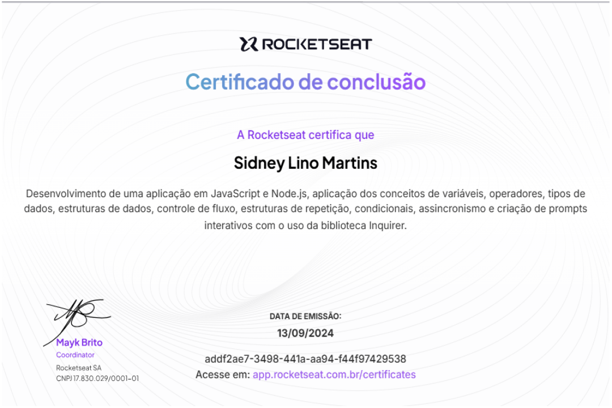
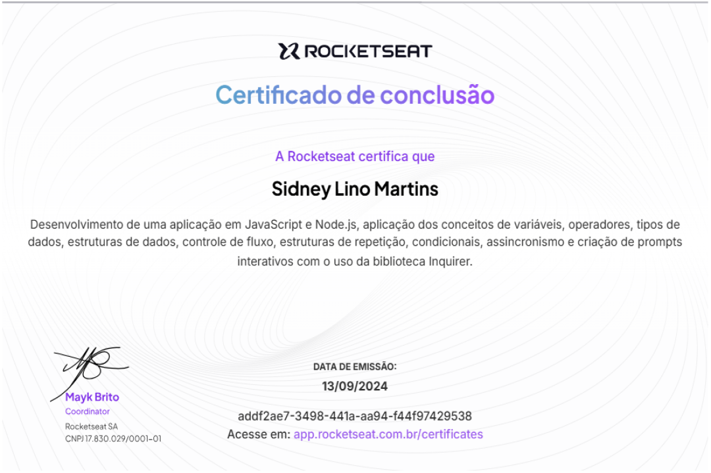

Sidney Lino
Analista e desenvolvedor de sistemas
Full Stack Web Developer
.svg)

Sobre mim
Meu primeiro contato com a programação foi com Python cursando engenharia eletronica na UFRPE. Desde o início,
percebi que esse era o caminho certo para minha carreira. Com o tempo, aprofundei meus estudos e migrei para a
√°rea de An√°lise e Desenvolvimento de Sistemas üíª. Atualmente, estou me dedicando a Angular, Node.js e Python ‚ö°,
sempre buscando evoluir e aprimorar minhas habilidades! üéØüî•
Alguns projetos

Réplica do spotify
Projeto criado durante o evento da hashtag Treinamentos, usando React, node.js e MongoDB. Obtive conhecimentos sobre o funcionamento de api's, props, componentes e ferramentas do React, além de implementar um design responsivo. O projeto me ajudou a aprimorar minhas habilidades tanto no frontend quanto no backend, criando uma interface interativa e funcional.
Sistema de telemedicina
Este projeto é uma plataforma de telemedicina desenvolvida utilizando o framework Django, com o objetivo de conectar médicos e pacientes por meio de consultas remotas. A aplicação permite que médicos realizem agendamentos para atender pacientes por videoconferência, utilizando o Google Meet.
.png)
Landing page - personal trainer
Este projeto consiste na criação de uma landing page moderna e responsiva para um personal trainer.
A página tem como objetivo apresentar as habilidades e serviços oferecidos pelo profissional,
proporcionando uma experiência intuitiva para potenciais clientes. O design prioriza a usabilidade e a intuitividade,
incentivando o contato e a contratação dos serviços.

.svg)
.svg)
.svg)

 
